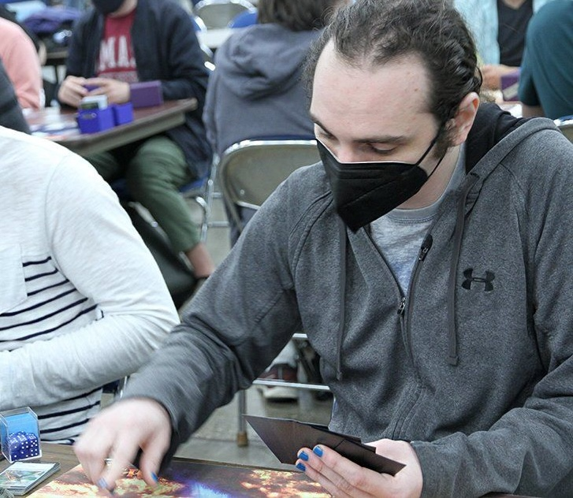

ABOUT ME
I am a postdoctoral researcher at Michigan State University in the department of Physics and Astronomy.
I work with Professor Wolfgang Kerzendorf and the
Kerzendorf Group modeling stars and searching for
surviving companions of type Ia supernovae to learn about their progenitor systems and test
different progenitor theories. I use statistical methods capitalizing on the revolutionary new GAIA
mission as well as archival Hubble data to investigate the stellar populations in supernova
remnants. I work at the intersection of observation and theory, making detailed models of stellar
atmospheres to simulate escaping stellar light and then fitting those models to observations to
learn about the structure and composition of stars.
I am the primarily developer on the open-source STARDIS
code, which solves the radiative transfer equation in the outer layers of a star to simulate
light passing through it.

This is the SN 1006 supernova remnant - a Type Ia remnant that lies only about 2 Kiloparsecs away. It's where I've done my first systematic search for a surviving Type Ia companion that you can read about here!
I founded and continue to help run Michigan State's astrophysics journal club, Astro Coffee! We meet twice a week to discuss new papers posted on Arxiv and recent developments in astrophysics. We have hybrid in person/virtual meetings that are open to anybody that would like to join.
In my free time I like to play racquetball, ride my bike, longboard, and snowboard. I love competition and all sorts of games, from board games, to videogames, to card games like magic the gathering. Contrary to popular belief, I've also been outside once or twice.